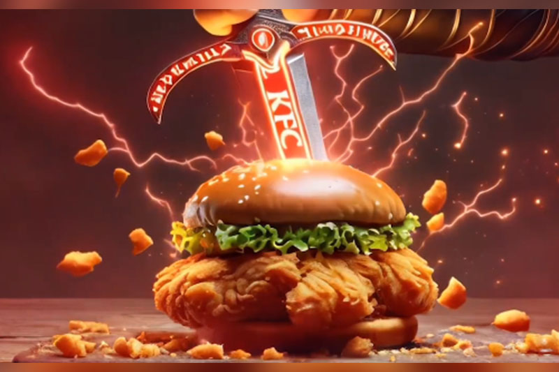

AI is notorious for adding a couple fingers on human hands because of their complicated structure. KFC used this to go along with their slogan, "The more fingers you have... the more you can lick".
They continued to show their love for AI art by generating more and more ads, affectivley replacimg their designers and artists with a machine.
KFC ads have only gotten worse, lacking the originality and emotion that draws people in. No longer does the food look good, just silly and nonsensical. Instead, KFC continues to use generated works to represent their bran, creating a more robotic and fake atmosphere, rather than the former homey and warm one.
This is where the images become creepy. While this was supposed to be celebrating Thanksgiving, the art style is so realistic in an uncanny valley way that it can only creep you out. Its style is also extremely inconsistent, showing the laziness and lack of passion that comes with ai
What makes this worse is that there is a already a painting of this scene by Norman Rockwell, which is significantly better